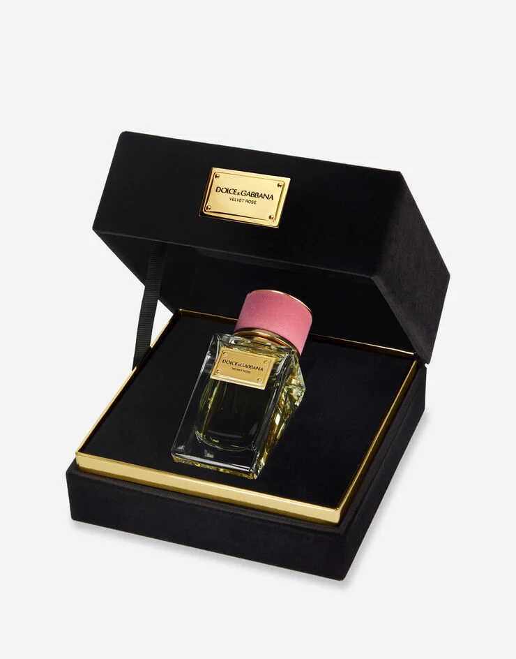

Velvet Rose
Свежий, словно роса на лепестках в момент пробуждения природы, женственный, словно
раскрывающийся бутон: аромат Dolce&Gabbana Velvet Rose воспевает розу с помощью запахов, максимально близких к
благоуханию настоящего цветка.
Описание
Средиземноморская роза — главная героиня женского аромата
Dolce&Gabbana Velvet Rose. Этот роскошный аромат искусно объединяет в себе три ценных экстракта для воссоздания
пленительного бутона, распускающегося на рассвете в первых лучах солнца. Dolce&Gabbana Velvet Rose входит в
коллекцию Dolce&Gabbana Velvet — эксклюзивное семейство ароматов, приглашающее открыть для себя историю и
традиции Сицилии, средоточия ДНК бренда.

Дизайн
Dolce&Gabbana Velvet Rose Eau de Parfum заключена в культовом массивном стеклянном
флаконе из коллекции Velvet Dolce&Gabbana, увенчанном пробкой из темно-розового бархата, подчеркнутой золотистыми
деталями. Флакон, персонализированный золотистой пластинкой, помещен в ларец из черного бархата.
НОТЫ
Dolce&Gabbana Velvet Rose Eau de Parfum: сияющее воплощение женственности.
Аромат был создан Родриго Флорес-Ру эксклюзивно для Dolce&Gabbana.
ВЕРХНИЕ НОТЫ
Цитрусовые ноты итальянского мандарина, полученные с помощью холодного отжима кожуры
свежесобранных фруктов, сочетаются с белой лилией и итальянским бергамотом в пленительной прелюдии к
цветочному сердцу.
НОТЫ СЕРДЦА
В сердце аромата Dolce&Gabbana Velvet Rose, где солируют три древние розы, смешиваются
свежие и нежные грани аккорда столистной розы, насыщенность абсолюта марокканской розы, воздушная чистота
болгарской розы и акценты египетской герани.
БАЗОВЫЕ НОТЫ
В шлейфе легкие акценты дикой малины и ежевики добавляют нежный фруктовый аромат к
мягкости шипрового мускуса вельвиона и утонченному благоуханию итальянского ириса.
.webp)